An open-source YouTube enhancement for iOS. Downloads, SponsorBlock, background playback, and a player without ads.
https://itzzace.github.io/ytkace/
Running on iOS.
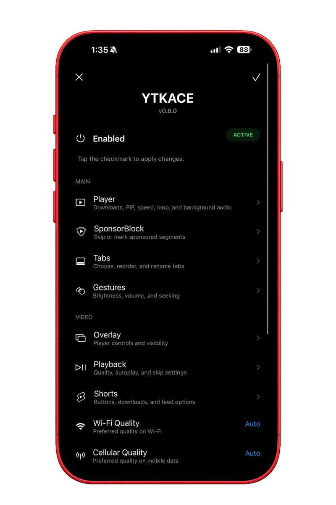
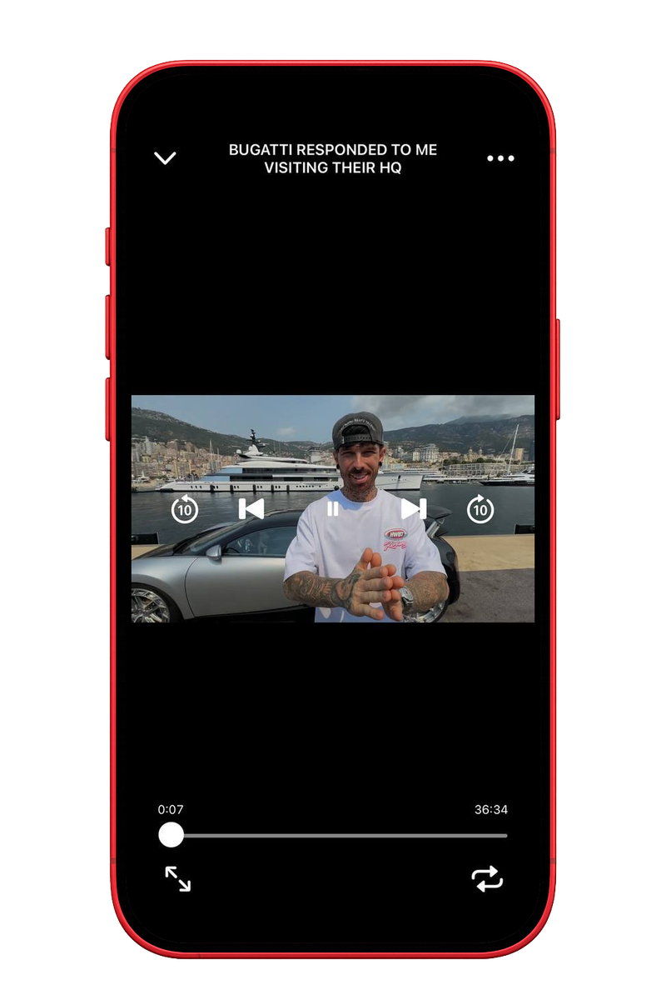
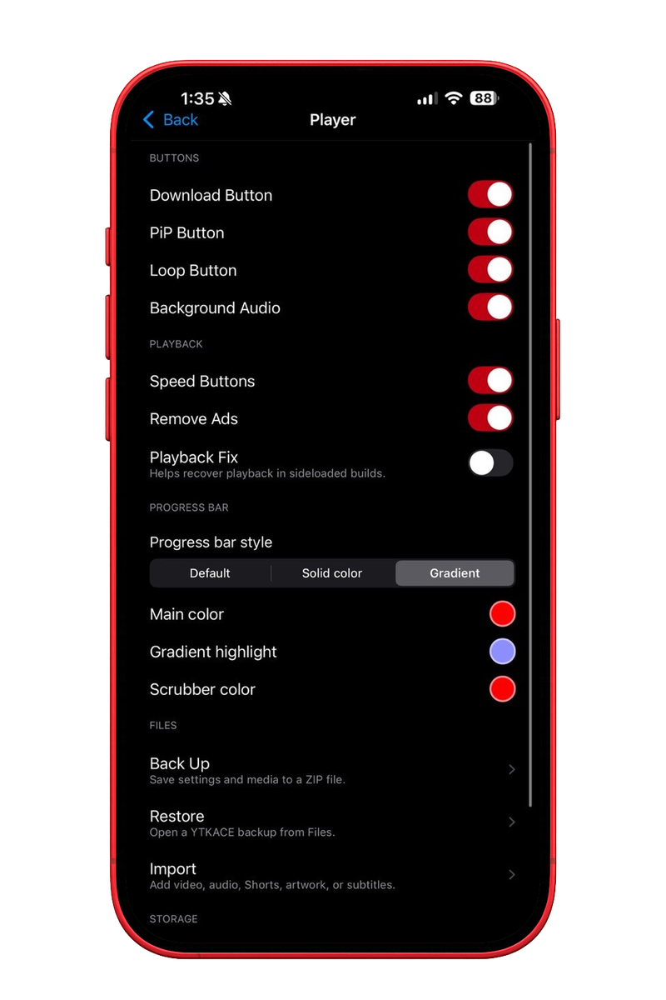
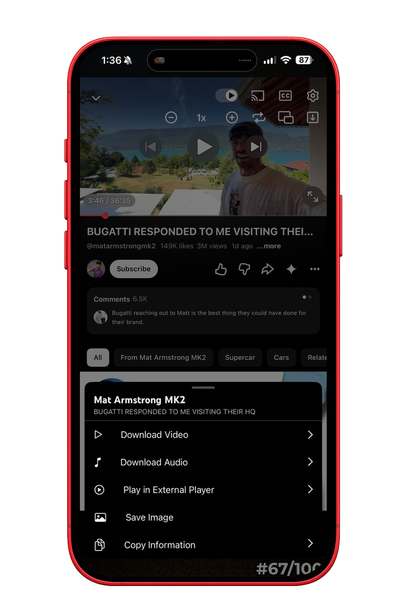
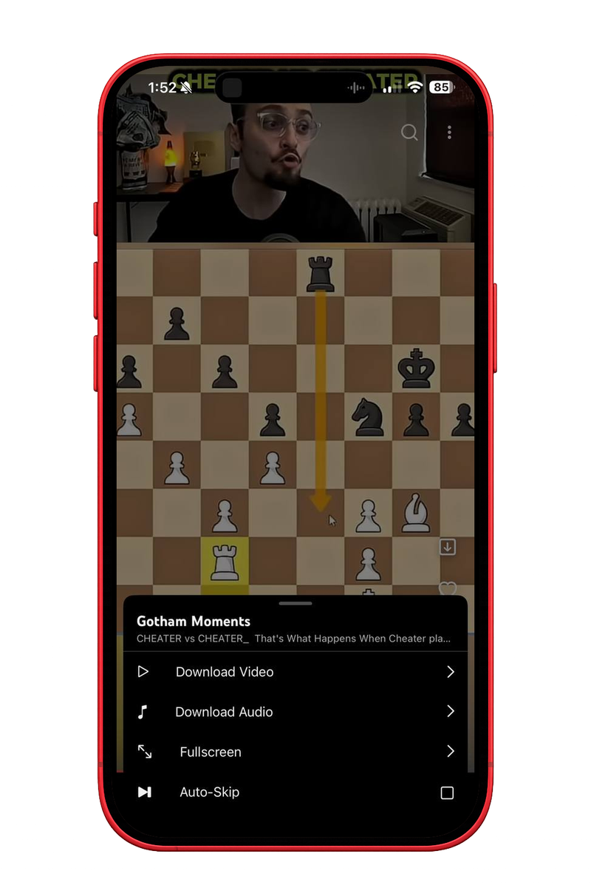
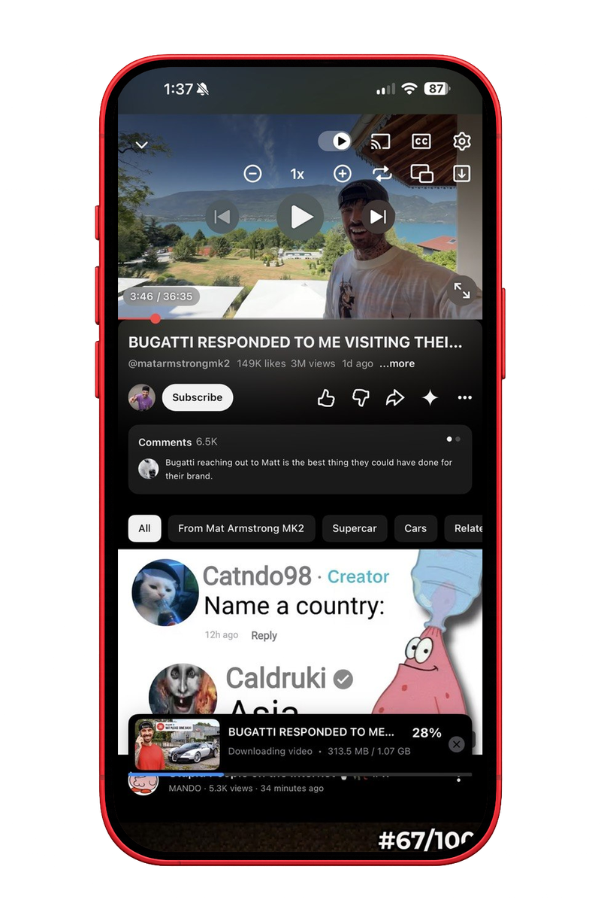
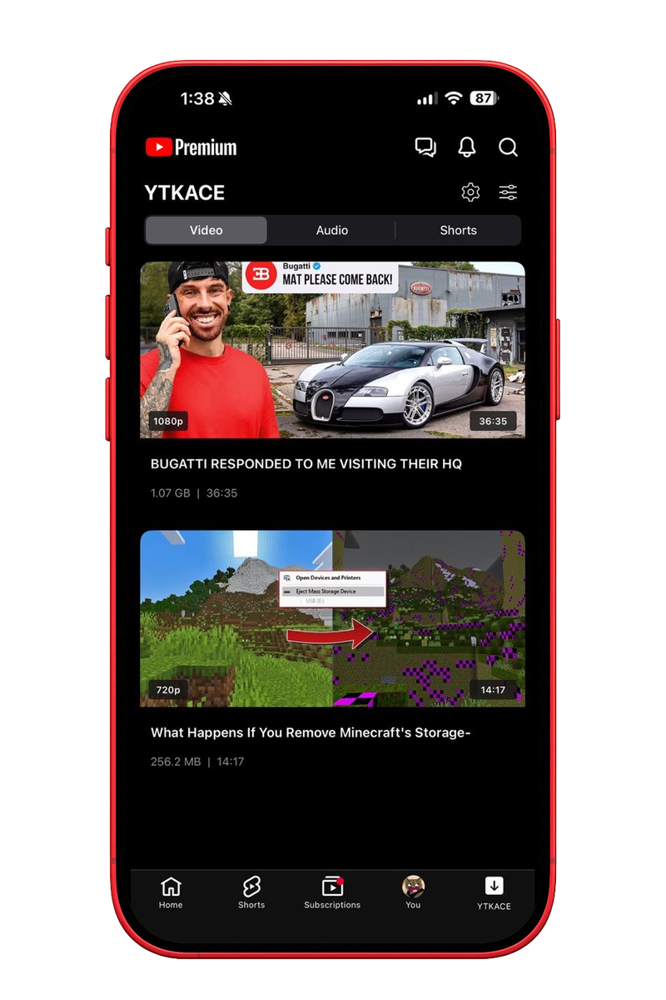
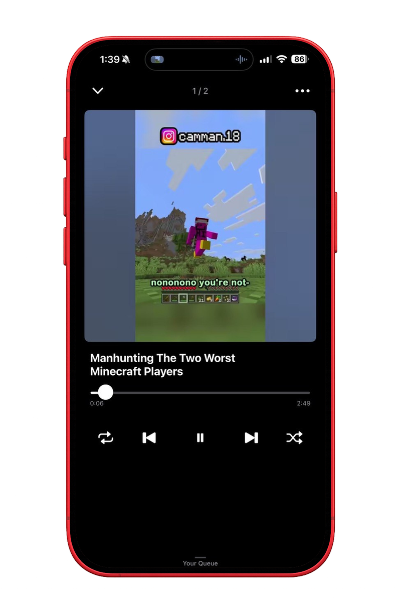
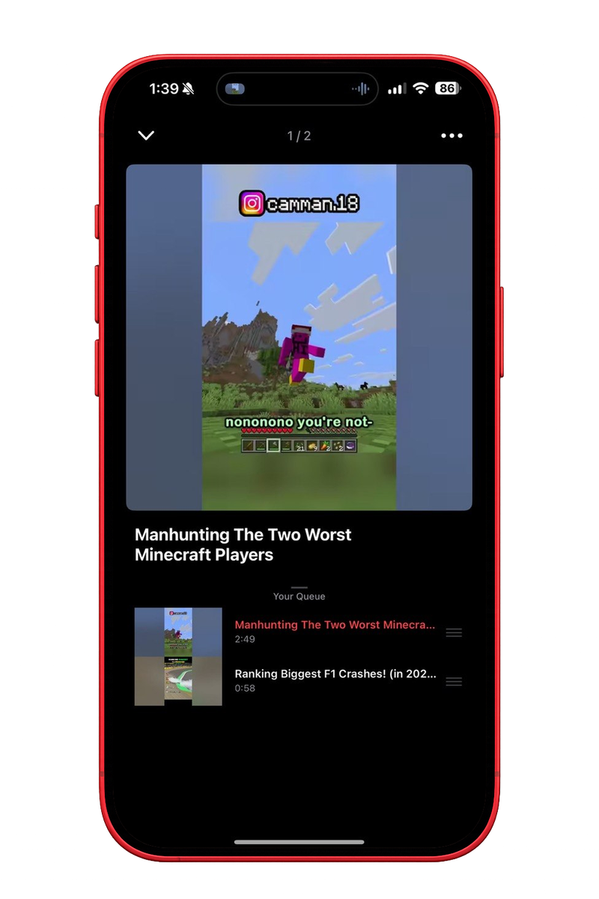
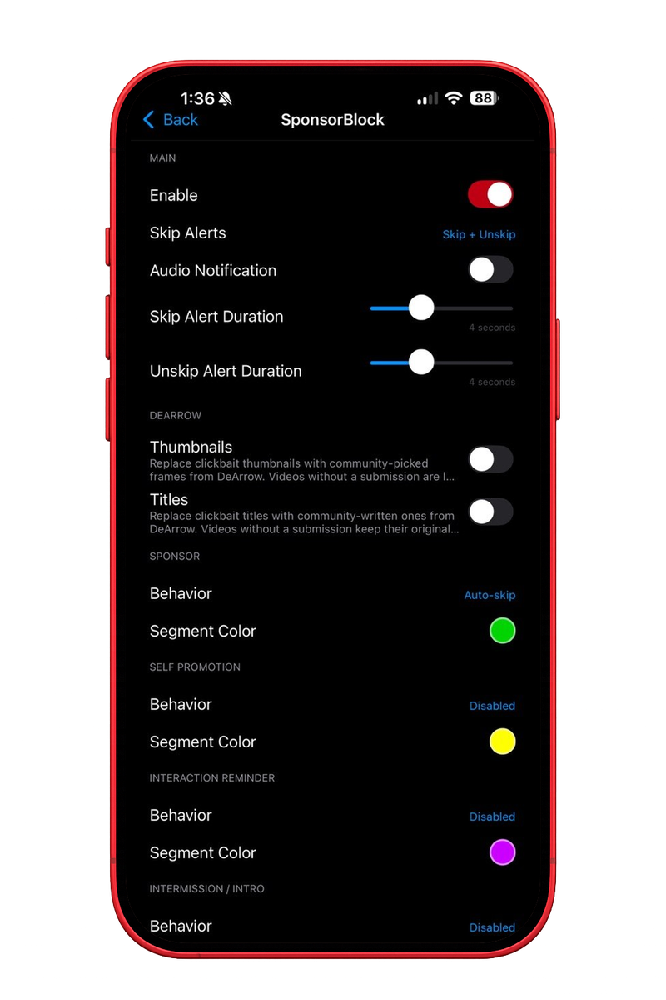
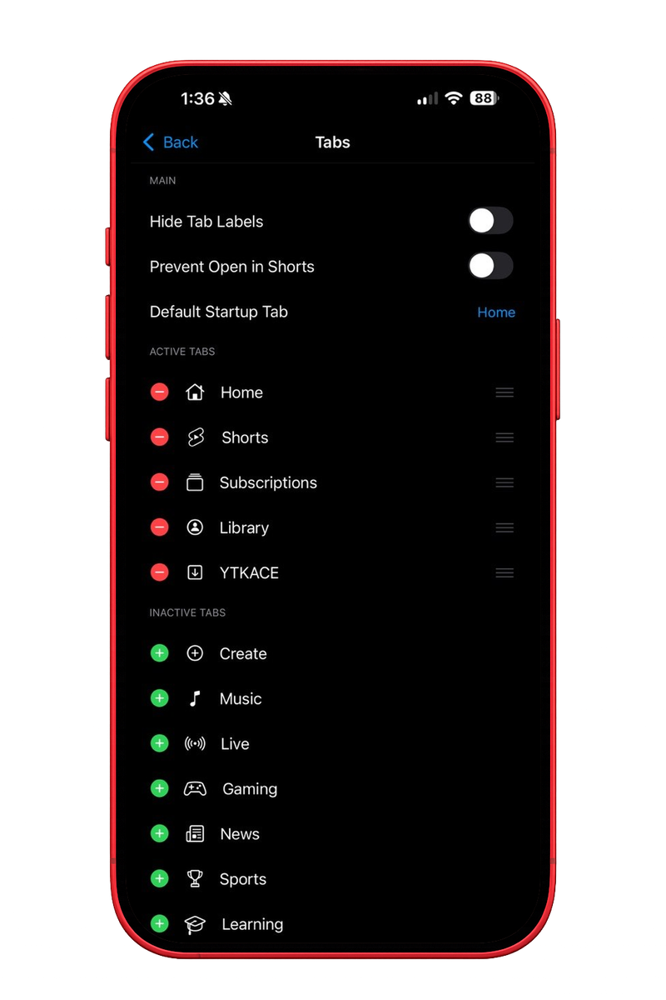
Jailbroken devices install from the repo. Everyone else sideloads the IPA.